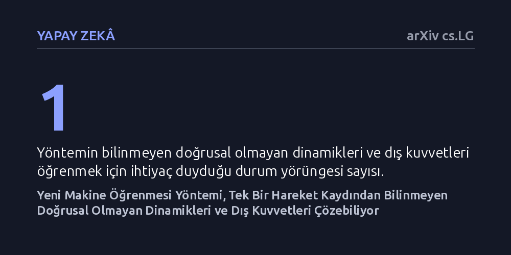

YAPAY-ZEKA · arXiv cs.LG · 2026-09-08
Araştırmacılar, fiziksel kuralları bilinmeyen dinamik sistemlerin hareket denklemlerini tek bir yörünge verisinden çıkarabilen fonksiyonel analiz temelli yeni bir makine öğrenmesi yöntemi geliştirdi. Yaklaşım, ayrık hata toplamları yerine fonksiyon uzayındaki integral mesafesini kullanarak hem iç dinamikleri hem de zamana bağlı dış kuvvetleri eşzamanlı öğrenebiliyor.
Karmaşık fiziksel sistemleri modellemek için yüzlerce deney yapma ya da sistemin matematiksel kurallarını önceden bilme zorunluluğunu ortadan kaldırabilir.

Fiziksel dünyada bir uydunun yörüngesinden kimyasal bir tepkimenin hızına veya hava akımlarına kadar hemen her süreç diferansiyel denklemlerle modellenir. Ancak pratikte sistemlerin davranışları nadiren doğrusal ve pürüzsüzdür; çoğu zaman birbirini karmaşık biçimde besleyen dinamiklerle doludur. Geleneksel mühendislik yaklaşımları bu denklemleri kurabilmek için sistemin kütlesi, sürtünmesi ve korunum kuralları gibi temel fiziksel özelliklerini önceden bilmeyi zorunlu kılar.
Son yıllarda yaygınlaşan veri odaklı yapay zeka yöntemleri, sistemin iç dinamiklerini bilmeden yalnızca sensör kayıtlarına bakarak hareket kurallarını keşfetmeyi hedefler. Ne var ki mevcut makine öğrenmesi yaklaşımları genellikle binlerce farklı başlangıç durumundan toplanmış devasa veri kümelerine ihtiyaç duyar. Üstelik dışarıdan gelen ve zamana göre değişen rüzgar veya sarsıntı gibi bilinmeyen dış kuvvetler devreye girdiğinde, bu modeller sistemin kendi iç yapısı ile dış etkileri birbirinden ayıramaz.
Mevcut makine öğrenmesi algoritmaları çoğunlukla ayrık zaman noktalarındaki hataların toplamını küçültmeye odaklanır; yani zaman içindeki tekil noktalara bakar ve tahmin ile gerçek arasındaki farkların karelerini toplar. Bu makale ise probleme klasik makine öğrenmesi kalıplarının dışından yaklaşarak yüksek matematiğin 'fonksiyonel analiz' ve 'operatör teorisi' araçlarını devreye sokuyor.
Yeni yöntemde amaç fonksiyonu, ayrık noktaların toplamı yerine fonksiyon uzayında iki sürekli fonksiyon arasındaki geometrik mesafe, yani bir integral olarak kurgulanıyor. Bu yaklaşım, sistemin hareketini birbirinden kopuk film kareleri gibi değil, sürekli ve pürüzsüz bir bütün olarak değerlendirmeyi mümkün kılıyor. Böylece sistemin matematiksel doğası yapay zekaya çok daha tutarlı ve yorumlanabilir biçimde aktarılabiliyor.
Geliştirilen yöntemin en ayırt edici kazanımı, sistemin vektör alanını öğrenmek için yalnızca tek bir durum yörüngesine ihtiyaç duymasıdır. Bir başka deyişle, incelenen nesnenin tek bir başlangıç noktasından başlayarak çizdiği tek bir rotayı kaydetmek, onun arkasındaki diferansiyel denklemleri çözmek için yeterli veri zeminini sağlayabiliyor. Bu kabiliyet, veri toplamanın son derece pahalı veya imkansız olduğu karmaşık süreçler için büyük bir avantaj vadediyor.
Bunun yanı sıra model, zamana bağlı olarak değişen ve önceden bilinmeyen dış kuvvetleri de sistemin kendi iç yapısından ayırt edebiliyor. Geliştirilen artımlı (çevrim içi) öğrenme algoritması sayesinde, sistem hareket ettikçe ve yeni veri noktaları geldikçe algoritma sıfırdan eğitime ihtiyaç duymadan kendini anlık olarak güncelleyebiliyor.
Bu araştırma, makine öğrenmesinde sadece dev veri kümelerine ve kara kutu modellere yaslanmak yerine sağlam matematiksel kuramlara dönmenin ne kadar verimli sonuçlar üretebileceğini gösteriyor. Elde edilen denklemlerin yorumlanabilir olması, mühendislerin ve bilim insanlarının yapay zekanın keşfettiği kuralları doğrudan denetleyebilmesine olanak tanıyor.
Bununla birlikte, sunulan başarının şimdilik yalnızca bilgisayar ortamında yürütülen kontrollü sayısal simülasyonlarla sınırlı olduğunu vurgulamak gerekir. Gerçek dünyada sensörler gürültülüdür, ölçümler eksiktir ve dinamikler kusursuz matematiksel eğrileri takip etmez. Yöntemin pratik bir mühendislik aracına dönüşebilmesi için gerçek fiziksel deney verileriyle de doğrulanması gerekmektedir.